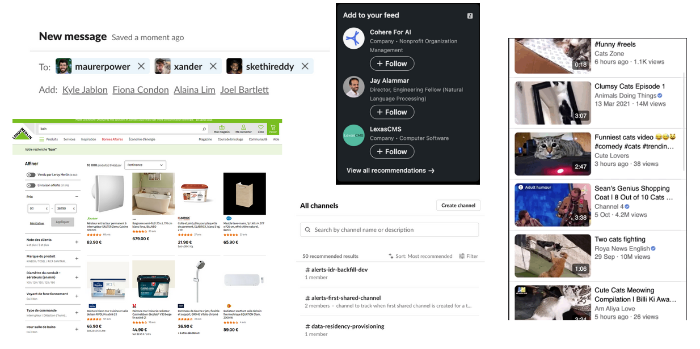
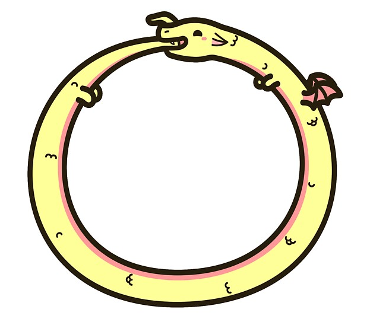
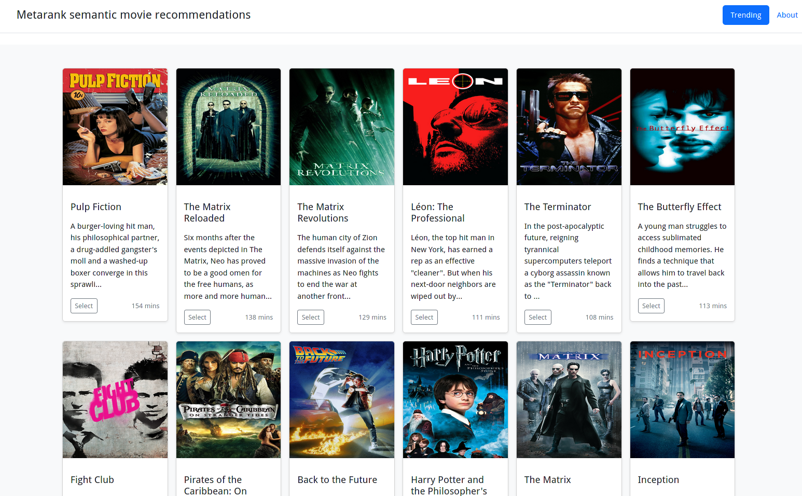

Semantic recommendations
A demo for the lablab.ai semantic search hackathon
Team metacrank, 2023
The metacrank team of one
- Long ago: PhD in CS, quant trading, credit scoring
- Past: Search & personalization for ~7 years
- Now:
UnemployedOpen-source contributorPrincipal DS
Recommendations 101

- Similarity between a current context and a set of candidates
- Collaborative filtering: interactions of other people
- SVD/ALS, BERT4rec/SASRec, LightFM, ...
Recommendations cold-start problem

- To have good recs, you need visitor feedback
- For the feedback, you need to show good-enough recs
- But you can't, as you don't have the feedback yet!
Content-based recommendations to the rescue
- But we do have content: title and description!
- Embedding of context ~= embedding of candidates
Semantic movie recommendations

- Take MovieLens/TMDB as a source of clicks and metadata
- Train MF ALS for a baseline CF recs
- co:here/sbert embeddings of title+description, Qdrant for k-NN search
Demo

How it was made

Glueing things together with Metarank:
- Existing open-source project for recs/ranking
- PR: semantic recommendations support
- PR: qdrant knn-search support
- A simple Flask UI with Movielens/TMDB dataset
Thanks!
- Demo source: github.com/shuttie/lablab-qdrant-cohere-hackathon
- Metarank: github.com/metarank/metarank
- Demo: http://semrec.dfdx.me
- Slide deck: shuttie.github.io/lablab-qdrant-cohere-hackathon